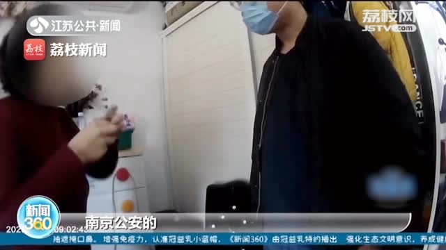

人民日报侠客岛说：
@侠客岛:
#岛叔微评#【女子#利用航班延误骗保300多万元#被刑拘？这事可以唠唠】一女子因虚构行程，利用近900次航班延误骗保近300万元，目前被南京警方以诈骗罪和保险诈骗罪刑事拘留。对此，不少网友热议，这样的定罪是否恰当？
李某的行为是否构成犯罪？岛叔对此采访了法律方面的专家，专家表示，实践中，机票由他人代买的情况很常见，法律也并不禁止用他人信息购票。航班延误的事实并非该女子伪造，也并非她可以决定，所以并没有实施诈骗行为。
保险诈骗行为一般表现为：原本没有购买保险却在事故发生后，伪造保险合同进而理赔，骗取保险公司的保险金；或者购买保险后，为获得理赔，故意伪造保险约定的事故，不当促成保险理赔条款的成就。
在本案中，该女子购买的机票都是真实的，航班延误险并不是在航班延误后她为了获得赔偿而故意捏造的保险合同；她也没有故意采取不当手段，促使飞机延误，进而骗取保险金。
所以，该女子的行为本质上是对保险公司保险合同规则的利用，在道德上可以争论，但在商业上符合理赔逻辑。
在民法上可以对其订立合同的目的、合同是否符合诚实信用原则进行探讨，但是无论如何，该女子的行为不构成犯罪。
保险公司如果认为女子获得保险金不恰当，可以依法提起民事诉讼，由法院判决保险合同是否有效、该种盈利模式是否妥当？但是，这种争议本质上是仍是对合同效力的民事判断，不应该上升到刑事司法的层面。
动辄用刑事手段解决民事纠纷，这是市场强势主体的一种傲慢，是对普通消费者的一种霸凌，更是对社会主义法治化营商环境的破坏，态度蛮横，影响恶劣。 JSTV荔枝视频的秒拍视频
JSTV荔枝视频的秒拍视频
李某的行为是否构成犯罪？岛叔对此采访了法律方面的专家，专家表示，实践中，机票由他人代买的情况很常见，法律也并不禁止用他人信息购票。航班延误的事实并非该女子伪造，也并非她可以决定，所以并没有实施诈骗行为。
保险诈骗行为一般表现为：原本没有购买保险却在事故发生后，伪造保险合同进而理赔，骗取保险公司的保险金；或者购买保险后，为获得理赔，故意伪造保险约定的事故，不当促成保险理赔条款的成就。
在本案中，该女子购买的机票都是真实的，航班延误险并不是在航班延误后她为了获得赔偿而故意捏造的保险合同；她也没有故意采取不当手段，促使飞机延误，进而骗取保险金。
所以，该女子的行为本质上是对保险公司保险合同规则的利用，在道德上可以争论，但在商业上符合理赔逻辑。
在民法上可以对其订立合同的目的、合同是否符合诚实信用原则进行探讨，但是无论如何，该女子的行为不构成犯罪。
保险公司如果认为女子获得保险金不恰当，可以依法提起民事诉讼，由法院判决保险合同是否有效、该种盈利模式是否妥当？但是，这种争议本质上是仍是对合同效力的民事判断，不应该上升到刑事司法的层面。
动辄用刑事手段解决民事纠纷，这是市场强势主体的一种傲慢，是对普通消费者的一种霸凌，更是对社会主义法治化营商环境的破坏，态度蛮横，影响恶劣。

2084万次播放
02:31